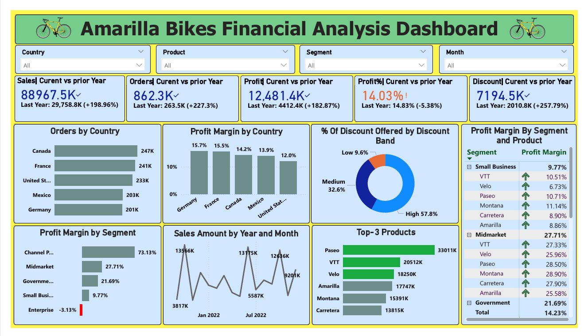

🧩 Project Overview
The Amarilla Bikes Financial Analysis Dashboard is a comprehensive Power BI solution designed to deliver actionable insights into the company’s financial and operational performance. This project was built with a clear goal: to empower leadership teams and decision-makers with data-driven analysis of sales, profitability, and customer behavior across markets, product lines, and time periods.
🎯 Objectives
- Track and analyze key performance indicators (KPIs) in real time
- Identify profitable segments, products, and markets
- Detect areas of concern such as low-margin segments or over-discounting
- Support strategic planning and resource allocation
- Provide a user-friendly, executive-level dashboard with drill-down capabilities
📌 Key Metrics and Insights Displayed
- Sales: $88.97M → ↑ +198.96%
- Orders: 862.3K → ↑ +227.3%
- Profit: $12.48M → ↑ +182.87%
- Profit Margin: 14.03% → ↓ -5.38%
- Discounts Offered: $7.19M → ↑ +257.79%
Each metric includes a comparison with the prior year, allowing stakeholders to immediately see areas of growth or decline.
🌍 Geographical Performance Analysis
- Top countries by orders: Canada (247K), France (241K), USA (233K), Mexico (203K), Germany (201K)
- Profit Margin by Country: Germany (15.7%), France (15.5%), Canada (14.2%)
👥 Customer Segment Profitability
- Channel Partners: 73.13% margin
- Midmarket: 27.71% margin
- Government: 21.69%
- Small Business: 9.77%
- Enterprise: -3.13% (flagged for review)
📦 Product and Segment Combination Analysis
- VTT performs best in Midmarket (27.33%)
- Paseo has strong performance in Small Business and Midmarket
🏆 Top Performing Products (by Sales)
- Paseo: 33M+
- VTT: 20.5M
- Velo: 18.25M
🕒 Time Series Sales Trends
Line charts showing monthly sales over years highlight seasonal patterns and promotion opportunities.
🎯 Discount Strategy Analysis
- Low Discounts: 9.6%
- Medium: 32.6%
- High: 57.8%
💼 Business Impact
- Enabled leadership to monitor financial health quickly
- Highlighted underperforming segments
- Provided insights for sales, marketing, finance
- Fostered data culture with self-service analytics
⚙️ Tools & Technologies Used
- Power BI
- Power Query
- Data Modeling,Dax
- Interactive dashboards with slicers
- Comparative Year-over-Year metrics
🔍 What I Learned
- Building real-world dashboards and data models
- Designing interactive, clean visuals
- Extracting actionable insights for business value